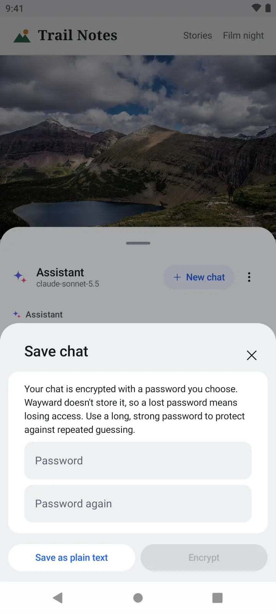
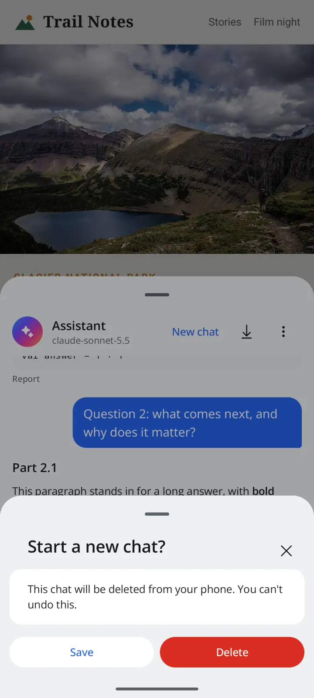
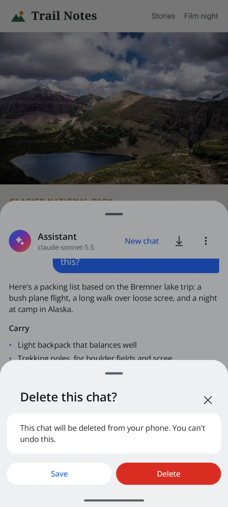
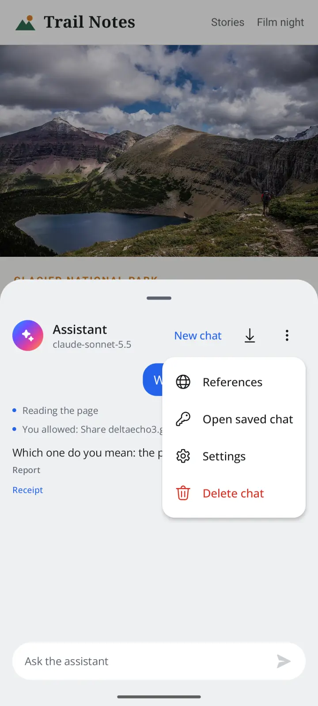
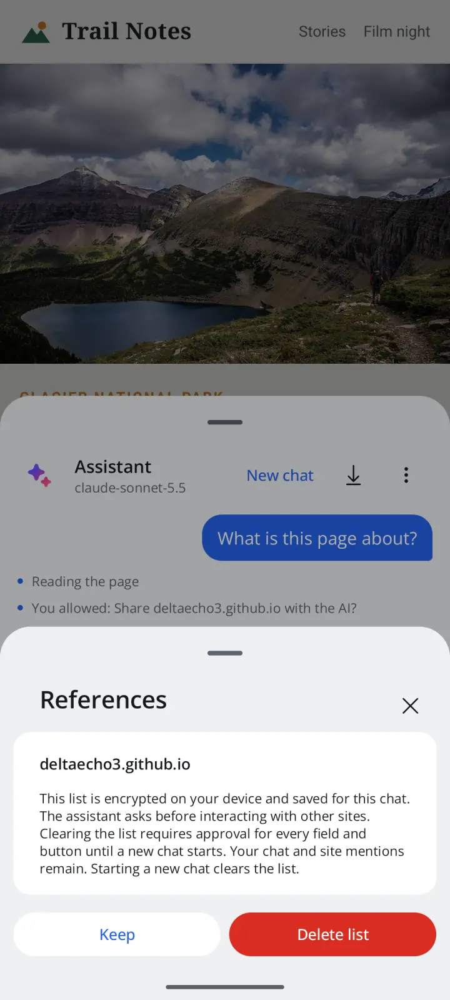
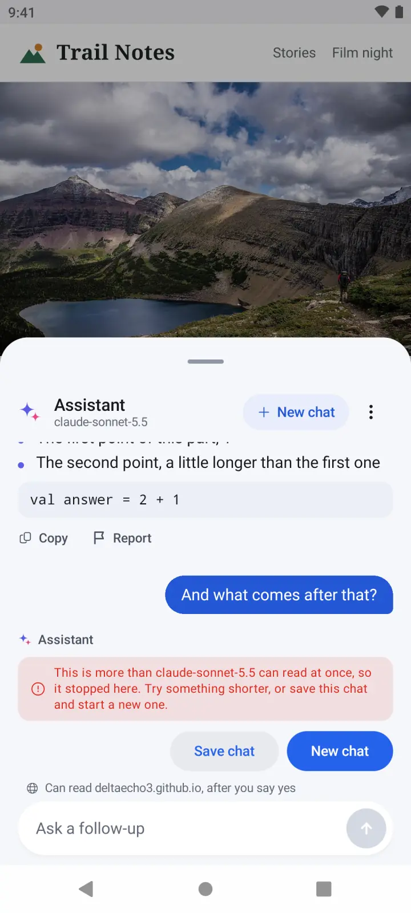

Save, open or delete a chat
How-to
Wayward keeps your current chat encrypted on your phone until you start a new chat. You can also keep a copy of it as a file, plain or locked with a password.
Save a chat to a file
- In the assistant's panel, tap Save chat at the top.
- Pick Save as plain text, or Encrypt to lock the file with a password. For an encrypted file, type the password twice (Password again). It needs at least 12 characters.
- Android's save screen opens: pick where the file goes.

Wayward doesn't keep the password, so if you lose it, nobody can open the file. Anyone holding the file can keep guessing, so make the password long. A plain text copy isn't encrypted at all. A chat that used a locked tab or locked Downloads can't be saved this way.
Save it from Backup
Settings > Backup > Chats > Save chat saves the chat Wayward keeps as an encrypted file, into a folder you pick. Type its password (twice, at least 12 characters), then pick the folder. A file already in the folder is never replaced: a new one gets a number after the date. As in the panel, a chat that used a locked tab or locked Downloads can't be saved this way. Open a chat on the same card opens one, as Open saved chat does.
Open a saved chat
Tap ⋮ in the panel, then Open saved chat. Pick the encrypted chat file and enter its password. The chat opens full screen as "Saved chat" and the date, read only: the assistant can't see it, screenshots are blocked, and it closes when you leave Wayward. Without Premium, Open saved chat is in Settings > AI assistant instead, so you can still read your saved chats.
Start a new chat, or delete this one
- New chat at the top clears the chat. Once you've sent three messages or more, Wayward asks first (Start a new chat?): Save keeps a copy before it goes, Delete clears it, and the X backs out.
- ⋮ > Delete chat always asks first: Delete this chat?.


The panel's menu, and References
The ⋮ in the panel has References, Open saved chat, Settings and Delete chat.

References lists the sites this chat has read. Wayward keeps that list with the chat, encrypted, so the assistant can ask before it types or presses something on a different site. Delete list clears it; after that the assistant asks before every field and button until you start a new chat. A new chat starts a new list.

When a chat gets too long
Every model can only read so much at once. When a chat goes past that, the assistant says so plainly, like "This is more than Claude Sonnet 5.5 can read at once, so it stopped here.", with Save chat and New chat right under it. Save it if you want to keep it, then start a new chat.

The panel shows the assistant under the name you gave it, if you named it, on its cards and step lines too. See name it and set how it talks.